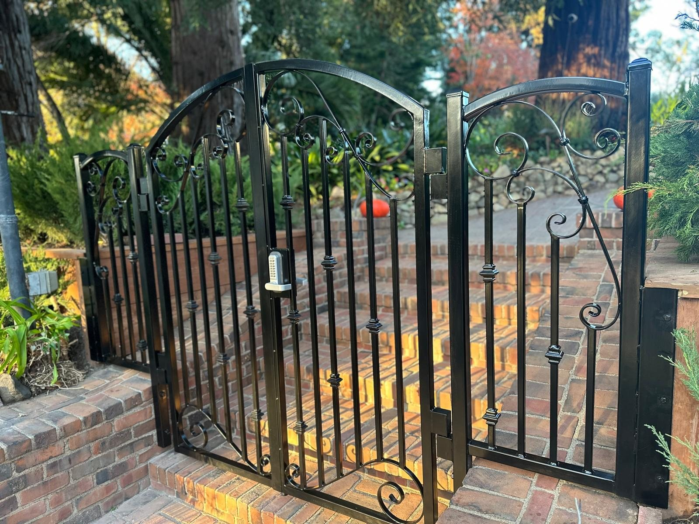

Service Areas
Bay Area mobile and shop welding service based near Hayward, CA.
Production Welding serves homes, commercial properties, shops, yards, trailers, equipment, job sites, and shop projects across the Bay Area.
City Landing Pages
Core Bay Area city coverage for welding service calls.
Hayward
Mobile welding, shop work, repairs, gates, railings, and fabrication
Oakland
Mobile welding, shop work, repairs, gates, railings, and fabrication
San Jose
Mobile welding, shop work, repairs, gates, railings, and fabrication
San Francisco
Mobile welding, shop work, repairs, gates, railings, and fabrication
Alameda
Mobile welding, shop work, repairs, gates, railings, and fabrication
Berkeley
Mobile welding, shop work, repairs, gates, railings, and fabrication
San Mateo
Mobile welding, shop work, repairs, gates, railings, and fabrication
South San Francisco
Mobile welding, shop work, repairs, gates, railings, and fabrication
Fremont
Mobile welding, shop work, repairs, gates, railings, and fabrication
No Public Shop Address
Shop work is available, but the address stays private.
Production Welding handles mobile service and shop work, but customers should call or email with photos, project details, and scheduling needs instead of driving to a storefront.
Common service requests
Gate welding and hinge repair
Handrails, stair rails, and brackets
Trailer and equipment welding
Commercial and residential repair welding
Custom metal fabrication
Shop welding
Get a Welding Estimate
Need a certified, insured welder for mobile or shop work?
Call Production Welding or send the project details, location, photos, and timing. Mobile service and shop work are available across the Bay Area.